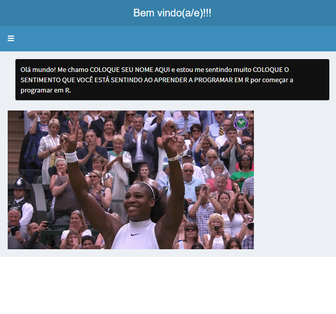

library(learnr)Warning: package 'learnr' was built under R version 4.2.1library(learnr)Warning: package 'learnr' was built under R version 4.2.1Write the R code required to add two plus two:
O R é uma linguagem maravilhosa e, antes de qualquer coisa, muito importante quebrar a maldição da programação em R. Como este tutorial está sendo produzido R Markdown, que é uma linguagem de marcação Markdown para R, você deve rodar o que está dentro dos códigos para ver as coisas acontecerem. Vamos ao “Olá, mundo!”.
Aqui embaixo a gente está criando um OBJETO contendo a função que quebrará a maldição pra você. Não se preocupe tanto em entender o código que gera a função agora.
OLA_MUNDO <-
function(nome, sentimento)
{
# GERANDO FRASE a ser inputada na funcao
frase <-
paste(
"Olá mundo! Me chamo",
nome,
"e estou me sentindo muito",
sentimento,
"por começar a programar em R."
)
# Parte que transforma a frase em app Shiny
## Carregando pacotes importantes para produzir o app
#install.packages("shiny")
library(shiny)
library(shinydashboard)
## Parte de interface do usuario do app
ui <-
# definindo pagina
dashboardPage(
# definindo cabecalho
dashboardHeader(title = "Bem vindo(a/e)!!!"),
# definindo barra lateral
dashboardSidebar(),
# definindo corpo do app
dashboardBody(
# colocando a frase, objeto criado la emcima, dentro de um box de fundo preto
box(frase, background = "black"),
# uma imagemzinha pra abrir um sorriso =)
img(src = "https://media.giphy.com/media/fAMztTgKyW4g0/giphy.gif")
))
## Parte reativa do app, aquela que faz mudar a interface do usuario de acordo
## com inputs dados no proprio app --- nao usamos aqui
server <- function(input, output, session)
{}
shinyApp(ui, server)
}Se der erro, deve ser porque você precisa instalar o pacote shinydashboard para fazer a função anterior. Nesse caso, instale dando play aqui:
#install.packages("shinydashboard") #So rode se nao tiver o pacote shinydashboard instalado. Remova o # antes de "install" e dê o play se precisar instalar.Aqui você já vai rodar a função, substiuindo os ARGUMENTOS nome e sentimento da função pelo seu nome e sentimento que está sentindo ao programar em R. Se tudo estiver correto, voce vai ser direcionado para o seu navegador com um app em Shiny rodando no seu servidor. Caso você esteja lendo pelo documento em HTML, você deve ver um print estático do app.
OLA_MUNDO(nome = "COLOQUE SEU NOME AQUI", sentimento = "COLOQUE O SENTIMENTO QUE VOCÊ ESTÁ SENTINDO AO APRENDER A PROGRAMAR EM R")
Attaching package: 'shinydashboard'The following object is masked from 'package:graphics':
box
Listening on http://127.0.0.1:6130
Agora você já sabe que confiabilidade e validade são muito importantes para as nossas pesquisas e para elaborar análises quantitativas. E você já sabe que variáveis precisam ser operacionalizadas para gerar indicadores que permiam análise.
A pesquisa indicada para leitura a partir da primeira aula (disponível lá no Perusall) tem o objetivo de entender a correlação que existe entre razão para estar em aula e taxa de presença de turmas em uma instituição de ensino superior.
Para isso, ele mensura a variável independente, que é a razão para estar em aula e a variável dependente, que é a taxa de presença da turma. Ambas as variáveis são, portanto, numéricas e ele possui um banco de dados assim:
| Turma | Índice de razão para estar em aula | Taxa de presença da turma |
|---|---|---|
| A | NUMERO | NUMERO |
| B | NUMERO | NUMERO |
| C | NUMERO | NUMERO |
Vamos reproduzir a visualização de dados que ele fez?
Primeiro, vamos definir nosso diretório de trabalho (Work Diretory - wd), onde está a base de dados (a base está lá no Notion, na sessão de materiais de estudo e também em material anexo da aula 2)
O código a seguir é só para tornar fixa essa mudança de diretório daqui até o fim do documento. Em documentos produzidos com rmarkdown ou quarto, uma mudança de diretório feita em um bloco de códico (chunk) é resetada após o R rodá-la.
knitr::opts_knit$set(root.dir = "G:\\Meu Drive\\Docência e pesquisa\\R\\Curso Analisar e Acolher - 2022.2\\Bases de dados") # isso seria equivalente ao setwd() só que para o resto do documetnto inteiro quando usamos rmarkdown ou quartoOk, agora o caminho que você escolheu é o padrão do seu R. Ele já sabe que tudo que você quer importar está lá. Agora, basta trazer a base de dados para o R. Mas, antes, vamos carregar os pacotes que vão ajudar a importar e a manipular a base de dados.
library(rio) # Pacote para importar base
library(tidyverse) # Pack de pacotes que contém o dyplr, feito para manipulação de base de dados e que contém o pacote ggplot2, para gráficos. Warning: package 'tidyverse' was built under R version 4.2.1── Attaching packages ─────────────────────────────────────── tidyverse 1.3.2 ──
✔ ggplot2 3.3.6 ✔ purrr 0.3.4
✔ tibble 3.1.7 ✔ dplyr 1.0.9
✔ tidyr 1.2.0 ✔ stringr 1.4.0
✔ readr 2.1.2 ✔ forcats 0.5.1
── Conflicts ────────────────────────────────────────── tidyverse_conflicts() ──
✖ dplyr::filter() masks stats::filter()
✖ dplyr::lag() masks stats::lag()# Lembra que sempre que o pacote não é encontrado, é porque ele não foi instalado. Só instalar com install.packages("nome do pacote) e depois dar o library(nome do pacote)Agora vamos importar:
# Abrindo base do exemplo do livro Manual de Investigacao em Ciencias Sociais
base_presencas <- import(file = "base_presencas_indice_satisfacao_Manual_Investigacao - Página1.csv")
# A função import() pertence ao pacote rio, que você já carregou antes.quiz(
question("Deu tudo certo até aqui?",
answer("base"),
answer("tools"),
answer("utils", correct = TRUE),
answer("codetools")
),
question("Which of the R packages listed below are used to create plots?",
answer("lattice", correct = TRUE),
answer("tools"),
answer("stats"),
answer("grid", correct = TRUE)
)
)Se tudo der certo, você tem que ter, a essa altura, um objeto lá no Environment chamado base_presencas.
glimpse(base_presencas)
grafico1 <- base_presencas %>% ggplot(aes(x = indice_razoes_presenca, y = taxa_presenca_media)) + geom_point() + geom_smooth(method = “lm”, col = “red”, se = F)
grafico1 + theme_classic() + ggtitle(“Correlação linear entre x e y”) + xlab(“RAZAO PARA ESTAR EM AULA”) + ylab(“Taxa de presenca”)
correlacao <- cor(base_presencas\(indice_razoes_presenca, base_presencas\)taxa_presenca_media)
plotly::ggplotly(grafico1)
base_presencas <- base_presencas %>% mutate(categoria_presenca = ifelse(taxa_presenca_media > 53.9, “alta”, “baixa”))
grafico2 <- base_presencas %>% ggplot(aes(x = indice_razoes_presenca, y = taxa_presenca_media)) + geom_point() + geom_smooth(method = “lm”, aes(col = categoria_presenca), se = F)